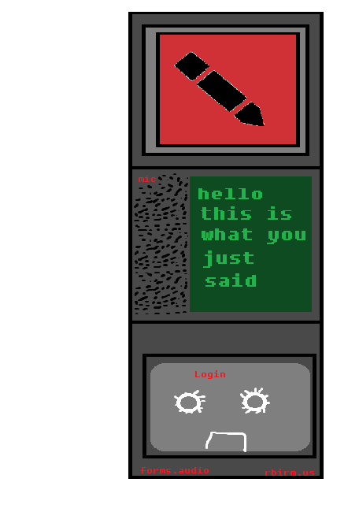

What is FormsAudio
Mspaint-quality sketch of site to come
See forms.audio for the concept and project landing.
This page is under construction. Heavily. And mostly in the background. This is actually a borrowed theme from here. The theme will not stay.
Develop with us!
Consider joining the organization at github.com/formsaudio